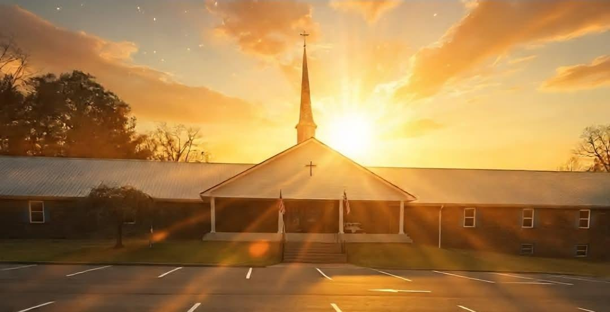
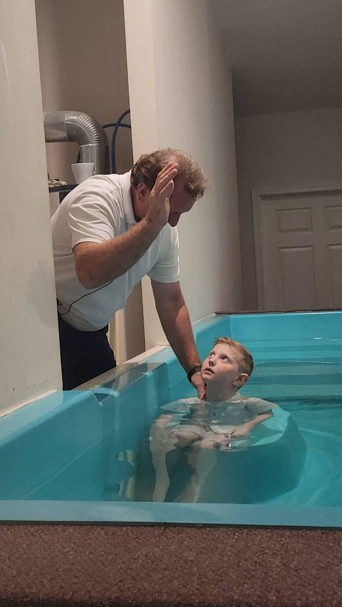
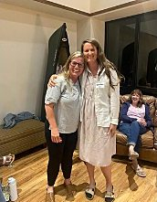
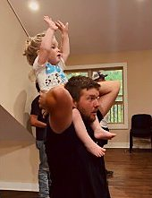
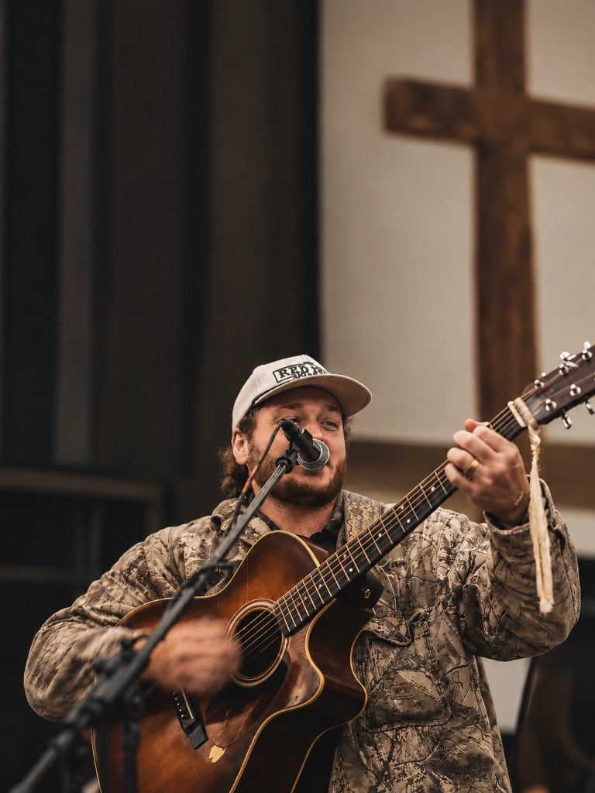
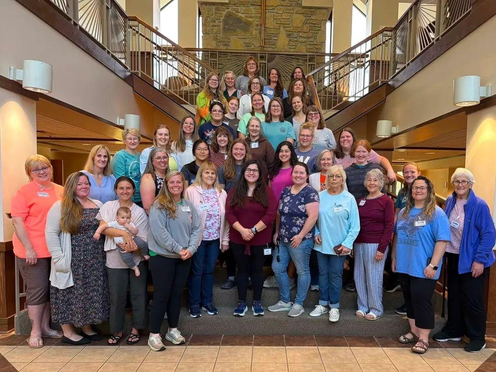
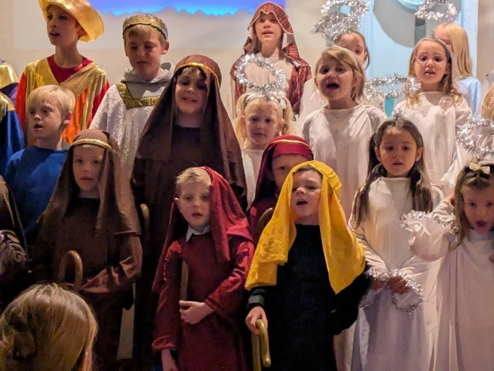
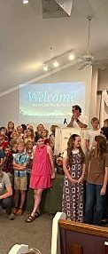
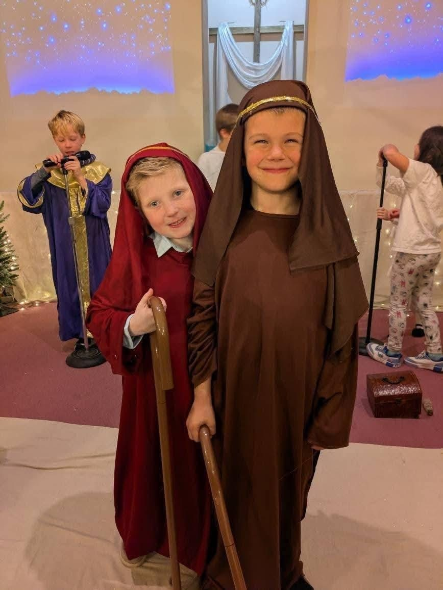

Sunday
Sunday School 9:00 AM
Worship 10:00 AM
Growing in faith. Sharing the Gospel. Serving one another.
At Burns Baptist Church, we believe in the power of God’s Word, the importance of fellowship, and sharing the hope found in Jesus Christ. Whether you’re visiting for the first time or searching for a church home, we invite you to worship and grow with us.
Loving God. Loving People. Making Disciples.

Sunday School 9:00 AM
Worship 10:00 AM
Worship 6:30 PM
Kids Connection 6:30 PM
Wednesdays 6:30 to 8:00 PM
Youth Pastor Mason Cook
We are a faith family, and we have ministries for all ages and stages of life.
Sunday School begins at 9:00 AM. Worship follows at 10:00 AM, with singing, prayer, and preaching from God’s Word.
We gather again on Wednesday at 6:30 PM. Kids Connection meets at the same time, so children can learn God’s Word while the church worships.
Kids Connection is our Wednesday children’s ministry at 6:30 PM. Children also have a place in Sunday School.
YOKE is our Word-centered student ministry, led by Youth Pastor Mason Cook. Doors open Wednesday at 6:30 PM, and students meet until 8:00 PM.
At Burns Baptist Church, we are a church family united by our faith in Jesus Christ. We gather to worship, study God’s Word, encourage one another, and share His love with our community. Whether you’re visiting for the first time or searching for a church home, we warmly invite you to join us.








At Burns Baptist Church, we believe the Bible is God’s Word and the foundation for our faith and how we live. We are committed to sharing the Gospel of Jesus Christ, growing in our relationship with Him, and following His teachings.
Our church affirms the Baptist Faith & Message 2000 (opens in a new tab), which outlines our core beliefs and biblical convictions.
Sunday and Wednesday services are recorded and posted on YouTube. These are the latest ones, not upcoming events.
Deacon Quality Christianity, from 1 Timothy 3:8–13. Pastor Aaron Terlecki.
Midweek service.
Sunday service.
We would love for you to know the people who serve our church family before you ever walk in.
Whether you’re visiting for the first time or searching for a church home, we would love for you to join us. Come worship, grow in faith, and experience the fellowship of our church family.
Plan Your Visit